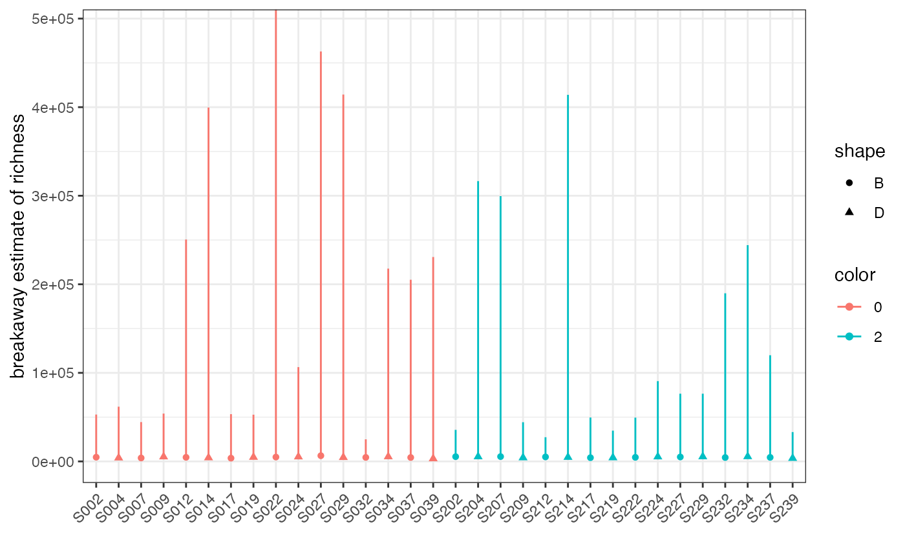

vignettes/diversity-hypothesis-testing.Rmd
diversity-hypothesis-testing.RmdThis tutorial will talk through hypothesis testing for alpha diversity indices using the functions betta and betta_random.
Disclaimer: If you have not taken a introductory statistics class or devoted serious time to learning introductory statistics, I strongly encourage you to reconsider doing so before ever quoting a p-value or doing modeling of any kind. An introductory statistics class will teach you valuable skills that will serve you well throughout your entire scientific career, including the use and abuse of p-values in science, how to responsibly fit models and test null hypotheses, and an appreciation for how easy it is to inflate the statistical significance of a result. Please equip yourself with the statistical skills and scepticism necessary to responsibly test and discuss null hypothesis significance testing.
Download the latest version of the package from github.
Let’s use the Whitman et al dataset from corncob as our example.
# devtools::install_github("bryandmartin/corncob")
library(corncob)
data("soil_phylo")
soil_phylo %>% sample_data %>% head## Plants DayAmdmt Amdmt ID Day
## S009 1 01 1 D 0
## S204 1 21 1 D 2
## S112 0 11 1 B 1
## S247 0 22 2 F 2
## S026 0 00 0 A 0
## S023 1 00 0 C 0I’m only going to consider samples amended with biochar, and I want to look at the effect of Day. This will tell us how much diversity in the soil changed from Day 0 to Day 82. (Just to be confusing, Day 82 is called Day 2 in the dataset.)
subset_soil <- soil_phylo %>%
subset_samples(Amdmt == 1) %>% # only biochar
subset_samples(Day %in% c(0, 2)) # only Days 0 and 82I now run breakaway on these samples to get richness estimates, and plot them.
richness_soil <- subset_soil %>% breakaway
plot(richness_soil, physeq=subset_soil, color="Day", shape = "ID")
Don’t freak out! Those are wide error bars, but nothing went wrong – it’s just really hard to estimate the true number of unknown species in soil. breakaway was developed to deal with this, and to make sure that we account for that uncertainty when we do inference.
We can get a table of the estimates and their uncertainties as follows:
summary(richness_soil) %>% as_tibble## # A tibble: 32 × 7
## estimate error lower upper sample_names name model
## <dbl> <dbl> <dbl> <dbl> <chr> <chr> <chr>
## 1 5257. 203. 4010. 54003. S009 breakaway Kemp
## 2 5343. 2252. 4317. 316529. S204 breakaway Kemp
## 3 4609. 978. 2782. 250548. S012 breakaway Kemp
## 4 5446. 1393. 3864. 299572. S207 breakaway Kemp
## 5 5359. 143. 4370. 35608. S202 breakaway Kemp
## 6 3882. 181. 2802. 44399. S007 breakaway Kemp
## 7 4906. 4787. 3111. 748118. S022 breakaway Kemp
## 8 5215. 343. 3327. 106472. S024 breakaway Negative Binomial
## 9 4509. 98.9 3443. 24952. S032 breakaway Kemp
## 10 5070. 114. 4189. 27300. S212 breakaway Kemp
## # … with 22 more rowsIf you haven’t seen a tibble before, it’s like a data.frame, but way better. Already we can see that we only have 10 rows printed as opposed to the usual bagillion.
The first step to doing inference is to decide on your design matrix. We need to grab our covariates into a data frame (or tibble), so let’s start by doing that:
meta <- subset_soil %>%
sample_data %>%
as_tibble %>%
mutate("sample_names" = subset_soil %>% sample_names )That warning is not a problem – it’s just telling us that it’s not a phyloseq object anymore.
Suppose we want to fit the model with Day as a fixed effect. Here’s how we do that,
combined_richness <- meta %>%
left_join(summary(richness_soil),
by = "sample_names")
# Old way (still works)
bt_day_fixed <- betta(chats = combined_richness$estimate,
ses = combined_richness$error,
X = model.matrix(~Day, data = combined_richness))
# Fancy new way -- thanks to Sarah Teichman for implementing!
bt_day_fixed <- betta(formula = estimate ~ Day,
ses = error, data = combined_richness)
bt_day_fixed$table## Estimates Standard Errors p-values
## (Intercept) 4547.1078 125.8542 0.000
## Day2 139.5325 170.1855 0.412So we see an estimated increase in richness after 82 days of 122 taxa, with the standard error in the estimate of 171. A hypothesis test for a change in richness would not be rejected at any reasonable cut-off (p = 0.475).
Alternatively, we could fit the model with plot ID as a random effect. Here’s how we do that:
# Old way (still works)
bt_day_fixed_id_random <- betta_random(chats = combined_richness$estimate,
ses = combined_richness$error,
X = model.matrix(~Day, data = combined_richness),
groups=combined_richness$ID)
# Fancy new way
bt_day_fixed_id_random <-
betta_random(formula = estimate ~ Day | ID,
ses = error, data = combined_richness)
bt_day_fixed_id_random$table## Estimates Standard Errors p-values
## (Intercept) 4475.4249 119.2010 0.00
## Day2 257.7939 161.2601 0.11Under this different model, we see an estimated increase in richness after 82 days of 258 taxa, with the standard error in the estimate of 161. A hypothesis test for a change in richness still would not be rejected at any reasonable cut-off (p = 0.11).
If you choose to use the old way, the structure of betta_random is to input your design matrix as X, and your random effects as groups, where the latter is a categorical variable. Otherwise, the input looks like how you would hand this off to a regular mixed effects model in the package lme4!
betta with DivNetMaybe you don’t care about richness… but you care about Shannon or Simpson diversity! DivNet is our R package for estimating Shannon and Simpson diversity.
DivNet can be slow when you have a large number of taxa (but we are working on it!), so to illustrate we are going to estimate phylum-level Shannon diversity:
soil_phylum <- subset_soil %>%
tax_glom(taxrank="Phylum")Easter egg: phyloseq::tax_glom can be incredibly slow! Mike McLaren is a total champ and rewrote it faster – check out his package speedyseq and speedyseq::tax_glom in particular.
Let’s treat all samples as independent observations (X = NULL) and fit the DivNet model:
(Check out the full documentation for details, including how to run in parallel)
dv <- DivNet::divnet(soil_phylum, X = NULL)This produces an object containing common diversity estimates:
dv## An object of class `diversityEstimates` with the following elements:
## - shannon
## - simpson
## - bray-curtis
## - euclidean
## - shannon-variance
## - simpson-variance
## - bray-curtis-variance
## - euclidean-variance
## - X
## - fitted_z
## Access individual components with, e.g., object$shannon and object$`shannon-variance`
## Use function testDiversity() to test hypotheses about diversityWe can look at the first few Shannon diversity estimates with the following:
combined_shannon <- meta %>%
left_join(dv$shannon %>% summary,
by = "sample_names")
combined_shannon## # A tibble: 32 × 12
## Plants DayAmdmt Amdmt ID Day sample_names estimate error lower upper
## <chr> <chr> <chr> <chr> <chr> <chr> <dbl> <dbl> <dbl> <dbl>
## 1 1 01 1 D 0 S009 2.04 0.00350 2.04 2.05
## 2 1 21 1 D 2 S204 1.98 0.00113 1.98 1.98
## 3 0 01 1 B 0 S012 2.00 0.00492 1.99 2.01
## 4 0 21 1 B 2 S207 2.04 0.00307 2.04 2.05
## 5 0 21 1 B 2 S202 2.01 0.00203 2.01 2.02
## 6 0 01 1 B 0 S007 2.04 0.00483 2.03 2.05
## 7 0 01 1 B 0 S022 2.04 0.00288 2.03 2.04
## 8 1 01 1 D 0 S024 2.01 0.00377 2.00 2.01
## 9 0 01 1 B 0 S032 1.99 0.00439 1.99 2.00
## 10 0 21 1 B 2 S212 2.02 0.00235 2.02 2.03
## # … with 22 more rows, and 2 more variables: name <chr>, model <chr>You might notice that the estimates are not different from the plug-in estimate (only because we used X = NULL), but we have standard errors! That’s the real advantage of using DivNet :)
bt_day_fixed_id_random <- betta_random(formula = estimate ~ Day | ID,
ses = error, data = combined_shannon)
bt_day_fixed_id_random$table## Estimates Standard Errors p-values
## (Intercept) 2.016085066 0.004695753 0.000
## Day2 -0.007620836 0.006591627 0.248and similarly for no random effects.
If you are interested in generating confidence intervals for and testing hypotheses about linear combinations of fixed effects estimated in a betta or betta_random model, we recommend using the betta_lincom function.
For example, to generate a confidence interval for \(\beta_0 + \beta_1\) (i.e., intercept plus ‘Day2’ coefficient, or in other words, the mean Shannon diversity in soils on day 82 of the experiment) in the Shannon diversity model we fit in the previous code chunk, we run the following code:
betta_lincom(fitted_betta = bt_day_fixed_id_random,
linear_com = c(1,1),
signif_cutoff = 0.05)## Estimates Standard Errors Lower CIs Upper CIs p-values
## 1 2.008464 0.006591627 1.995545 2.021384 < 1e-20Here, we’ve set the linear_com argument equal to c(1,1) to tell betta_lincom to construct a confidence interval for \(1 \times \beta_0 + 1 \times \beta_1\). Because we set signif_cutoff equal to \(0.05\), betta_lincom returns a \(95\% = (1 - 0.05)*100\%\) confidence interval. The p-value reported here is for a test of the null hypothesis that \(1 \times \beta_0 + 1 \times \beta_1 = 0\) – unsurprisingly, this is small. (If you are confused about why this is “unsurprising,” remember that \(\beta_0 + \beta_1\) represents a mean Shannon diversity in soils on day 82 of the experiment of Whitman et al. When can a Shannon diversity be zero?)
The syntax and output using betta_lincom with a betta object as input is exactly the same as with a betta_random object, so we haven’t included a separate example for this case.
And there you have it! That’s how to do hypothesis testing for diversity!
If you use our tools, please don’t forget to cite them!
breakaway: Willis & Bunge. (2015). Estimating diversity via frequency ratios. Biometrics. doi:10.1111/biom.12332.DivNet: Willis & Martin. (2018+). DivNet: Estimating diversity in networked communities. bioRxiv. 10.1101/305045.betta: Willis, Bunge & Whitman. (2016). Improved detection of changes in species richness in high diversity microbial communities. Journal of the Royal Statistical Society: Series C. doi:10.1111/rssc.12206.